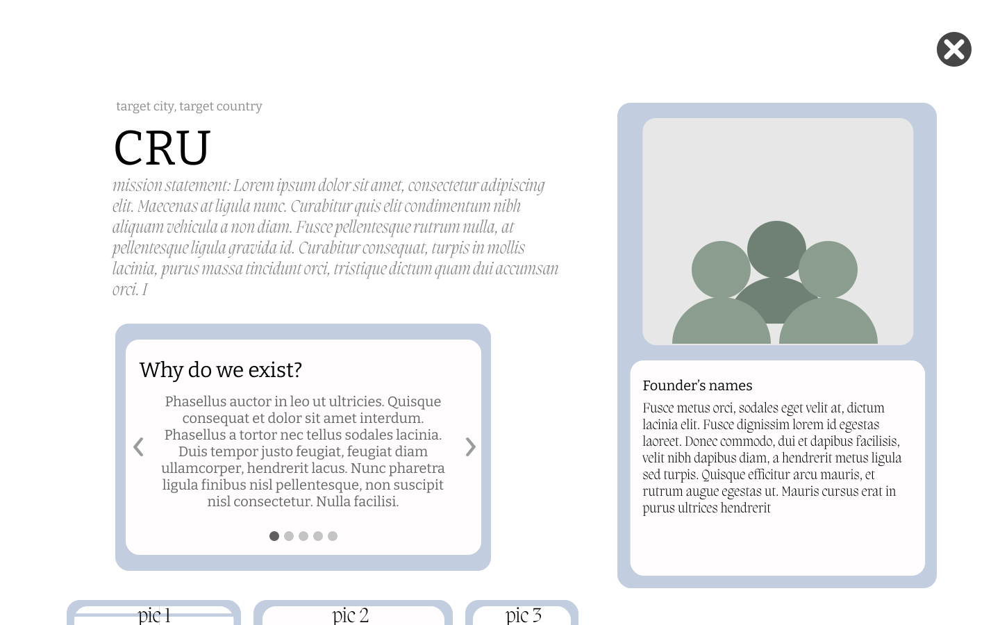
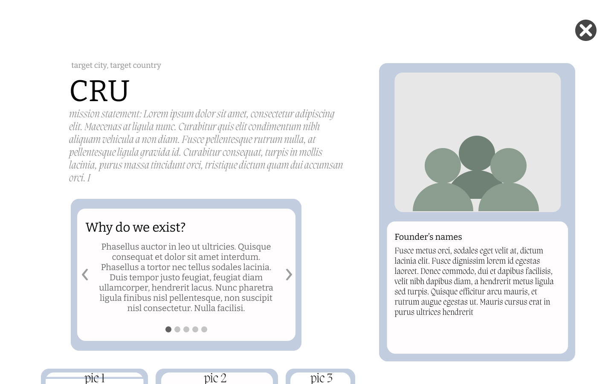

Missions Conference 2021: case study
(Sept 2020-Mar 2021)
Biola University holds an annual school-wide conference, inviting speakers from all over to share their experiences
from missions work and to encourage students to be bold.
Due to the global pandemic, Missions Conference 2021 moved to an online virutal platform to be accessible to everyone.
As the UX/UI designer of this product, my purpose was to bridge the gap of developers and designers.
I ensured the designers got their ideas across and the developers could manifest those into the product.
My responsibilities consisted of creating the general UI of the website to pass on to our development team.
These neatly-designed pages allowed users to navigate the virtual conference with ease and readability.
In addition, I created wireframes and mock prototypes to guide the developers in how best to achieve good user flow.
Each screen differed in its purpose and functionality from
creating global awarness on serious topics, to playing guest speaker videos, even listing out organizations and their
upcoming mission trips.
With the magnitude of information normally conveyed in-person, we needed to create a clean and neat design that followed
accessbility guidelines, while still compelling our target audience to be inspired and take action.


 
